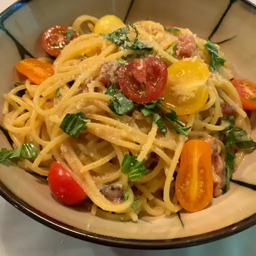

Spaghetti carbonara

Description
This bacon carbonara is a super rich, classic "bacon and egg" spaghetti dish that's great to serve for company. This recipe also makes an unusual brunch offering
Ingredients
- 1 pound spaghetti
- 2 tablespoons olive oil, divided, or as needed
- 8 slices bacon, diced
- 1 onion, chopped
- 1 clove garlic, minced
- 4 large eggs, beaten
- salt and black pepper to taste
Steps
- Boil pasta
- Fry the bacon
- Mix bacon with pasta and serve!